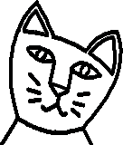

Kamaelia Commentary
News:
- 22 December 2004 - ZDNet publishes an article on Kamaelia.
Knockon articles & blog comments:
- 22 December 2004 - Short lived "hmm?" type discussion on linux forums as a result of the ZDNet/UK Builder article
- 23 December 2004 - Mention on LinuxCenter.ru. Has a translation of the name Kamaelia into cyrillic. (Doesn't quite get the pronounciation quite right though, the 'e' should be an "ee" sound - ie a backwards 'N' :) Comment came as a result of zdnet article.
- 24 December 2004 - OS News posts a small article, greeted with interest.
- 24 December 2004 - Bash Profile (french open source news site by the looks of things) puts a small article up. This is based on a pointer to the zdnet france translation of the same article.
- 25 December 2004 - Brief comment on Russian site nixp.ru (looks like a blog/news aggregator?) pointing at zdnet article.
- http://www.jalug.org/theNews/2004/december/BBCKamaelia_project
- 28 December 2004 - http://www.loftvpro.com/index.php?affich=affichnews&idnews=1645
Other:
- Delete/rewrite when appropriate: http://www.affs.org.uk/~alex/index.cgi?NewsLetterEditing (probably to become http://www.affs.org.uk/~alex/NewsLetter200501 based on its contents) greets Kamaelia warmly (but also with a hint of cynicism). As for Boy George jokes, a Camellia is a shrubbery, and the name is a play on the python phrase involving shrubberies :) ).
Michael, December 2004